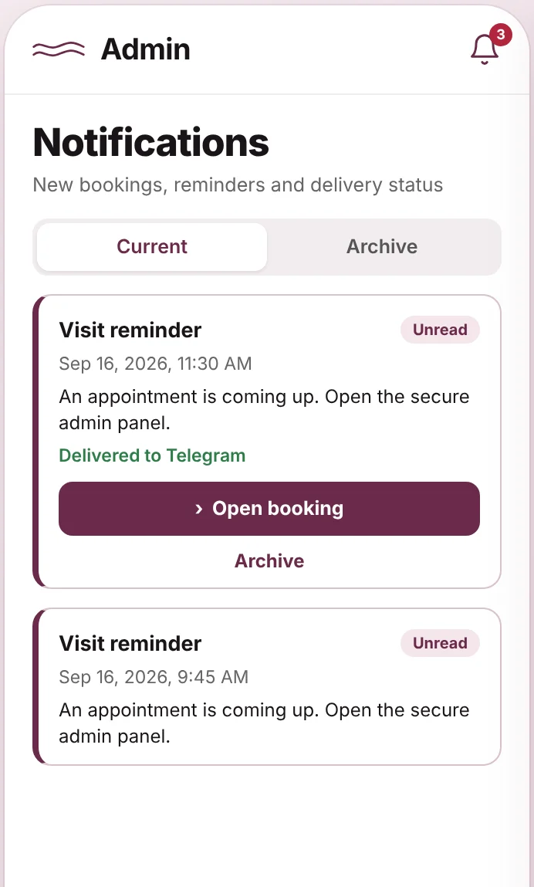
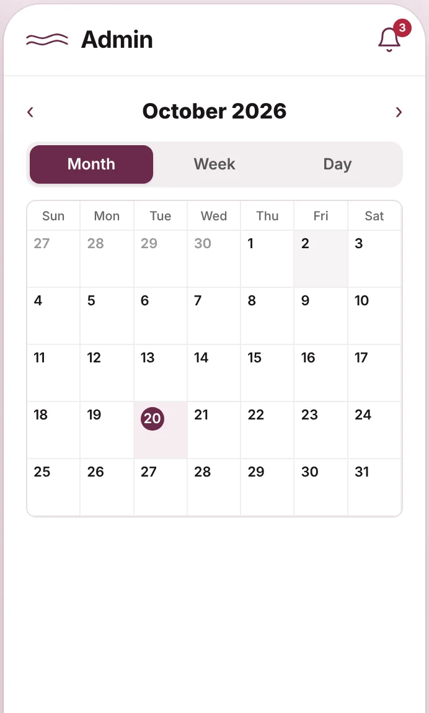

Live pilot · Israel
Clients book themselves. The day runs from one phone.
Torhair is a booking site, calendar and client book for an independent specialist. Clients pick a service and a free time from their phone, with no account. The specialist manages schedule, visits, payments and the public page from hers.
The problem
A specialist who works alone is also her own receptionist.
Bookings arrive in WhatsApp and Telegram at any hour. Free time lives in her head and in a notebook. Torhair replaces that with one mobile tool.
Before
- “Do you have anything on Thursday?” in chats, late at night
- Free slots worked out by hand, with breaks and travel time
- Clients, visits and payments spread over chats and spreadsheets
- Two people can be promised the same hour
With Torhair
- Clients see real free time and book it themselves
- Breaks, buffers and days off are applied automatically
- Every client has one card with history and payments
- The system refuses a second booking for a taken slot
How booking works
Four taps for the client. A notification for the specialist.
Choose a service
One or several services. Duration and price are summed for the visit.
Pick a free time
Slots are calculated from working hours, breaks, buffers, other visits and busy time in Google Calendar.
The time is held
The slot is held for 10 minutes while the client enters a name and phone. Nobody else can take it.
Confirmed
The booking is confirmed at once. The specialist gets a Telegram message, with a backup email if Telegram fails.
Mobile admin
Everything the business needs, sized for a thumb.
The admin is designed for a phone first. The screens below use demo data.


Inside
Small product, complete loop.
Editable public page
About, services, gallery, contacts, map and FAQ. Blocks are edited and reordered from the phone.
Personal booking links
A one-time link with individual terms for a specific client. It expires after use or on a set date.
Schedule and exceptions
A weekly template, days off and special hours for any date range. Changes never cancel existing visits silently.
Works with Google Calendar
Bookings go to a personal calendar. Busy events from chosen calendars close the same time for clients.
Client book
Client cards with visit history, matching of repeat clients, merge, archive and anonymisation.
Payments and revenue
Close a visit with a payment method. Revenue and statistics by period, with a reconciliation report.
Engineering
Built like it holds someone’s income. Because it does.
A missed or doubled booking costs a real client and a real day. So the calendar logic is tested hard, data survives any deploy, and every release leaves evidence.
automated tests: unit, integration, property-based and browser
parallel processes racing for one slot produce exactly one booking
versioned SQLite migrations, each with a backup taken before it runs
Playwright browser profiles, mobile first
One write path for the calendar
Every action that changes busy time goes through one SQLite transaction with BEGIN IMMEDIATE. Overlaps and buffers are hard rules, not warnings.
Calendar algebra with property tests
Free slots are calculated, never stored. fast-check generates schedules to find edge cases. Temporal handles Israeli daylight saving time.
Backups that are restored, not just made
A backup holds the database, media, a manifest and SHA-256 checksums. Each one is verified with a restore smoke test.
Release with evidence
A gate runs lint, types, schema checks, tests, build, browser tests, smoke, dependency and secret scans. The deploy journal records the exact commit and image.
Durable notifications
Telegram messages and reminders go through an outbox in SQLite with unique keys, so a restart neither loses nor duplicates them.
Small surface, safe defaults
A non-root Docker container, secrets outside the image, Cloudflare Turnstile against spam, server-side checks in every loader and action.
Status
In daily use by one hairstylist. Built to fit more.
Torhair runs in production for an independent hairstylist in Israel since August 2026. The first version is deliberately one installation per specialist: no marketplace, no salon with staff.
This page shows no client data. Screens use demo content; the live booking page and its address are not published here.
Not in the first version, on purpose
- Client accounts and self-service rescheduling
- Online card payments
- Bulk messages and marketing
- Several specialists in one calendar